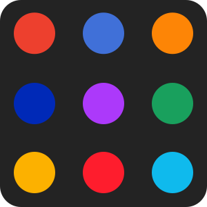

The browser prompter for macOS


Multi-Default
After clicking a link, use the picker to choose the correct browser for the job.

Favourite
Keep your usual browser closest to the mouse, at quadruple the size.
The Blue Bar
Make sure the website you are about to open is the one you are expecting.
See it in action
Browserosaurus is FREE. However, please consider a small donation. Doing so will help me cover the cost of future development.